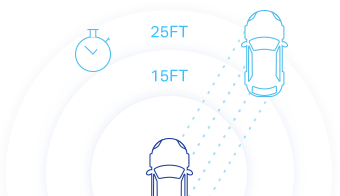

What is LiDAR?
Light Detection and Ranging (LiDar), is a method of range finding that
scientists from all fields have been using. From building
topographical maps to even improving augmented reality, LiDAR is
certainly an important cross-section between physics and computer
science and many other related fields. Similar to sonar and radar,
which use sound and radio waves respectively, LiDAR instead utilizes
the speed of light as well as time to calculate how far away something
is. LiDAR machines send out pulses of lasers to calculate the time
elapsed as the laser beams bounce back to the machine. This allows for
computers to be able to render 3D surfaces of a particular
environment.
LiDAR machines typically utilize three main components: a GPS
receiver, a scanner, and a laser. Although many of these machines can
be found in airplanes and cars, they can also be found inside the
latest phones. These devices use light waves past the eye’s visible
spectrum, which also implies that LiDAR can also be used in the dark
as well.
How does LiDAR work?

- 
Let’s say I was in a self driving car. In order for me to drive safely, I would need to have a precise model of what my surroundings look like. This is where LiDAR works fantastically. For LiDAR to work, I will emit pulses of light waves from my vehicle in all directions. Soon, the light will bounce off an object blocking the lights path, and the sensor will be notified of this reflection. And through simple kinematics (explained below), a computer can compute how far away the surroundings are based on how long it took for the light to be reflected. If this process is repeatedly executed in real time, the computer is able to generate a rough map of its surroundings.
LiDAR's Relevance to Physics
-
Much of LiDAR’s basic functionality has to do with the kinematics we’ve learned in class. We learned that velocity is equal the rate of change and direction of an object with respect to time. Because the speed of light is constant (299 792 458 m / s), and our machine can calculate the time it took for the light wave to reflect, we can multiply the speed of light with the time to get the distance the light traveled, to get an accurate prediction of how far something is from the LiDAR machine.
-
Because most LiDAR machines are utilized on non-stationary machines, a unique property called the doppler effect arises. Because the light waves pulse with the same frequency from the machine, but the machine itself is moving. Thus there will be a change in relative velocity and thus a change in frequency in the observer’s frame of reference. A real life example of this is when a racecar roars by and you can hear the change in pitch of the car engine. As the car approaches you with a velocity the frequency of the pulses increase thus generating a higher pitch.
-
Light travels undergoing simple harmonic motion, or SHM for short. SHM is a type of motion where these waves oscillate around a center, like a pendulum, or in more specific terms, when the acceleration of the particle or wave is directly proportional to its center (mean position). Because there are other light waves while the LiDAR machine is operating, there can be constructive and destructive interference, where waves become superimposed. Sometimes they can cancel out, like white noise, or even amplify the wave, like combining music speakers.